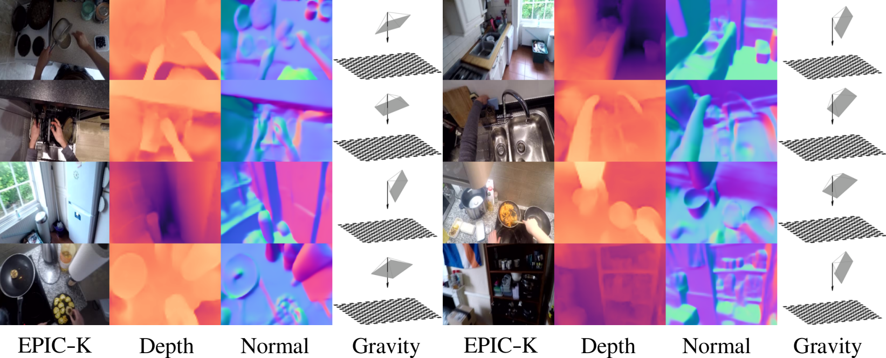

Egocentric Scene Understanding via Multimodal Spatial Rectifier

Abstract
In this paper, we study a problem of egocentric scene understanding, i.e., predicting depths and surface
normals from an egocentric image. Egocentric scene understanding poses unprecedented challenges:
(1) due to large head movements, the images are taken from non-canonical viewpoints (i.e., tilted images)
where existing models of geometry prediction do not apply;
(2) dynamic foreground objects including hands constitute a large proportion of visual scenes.
These challenges limit the performance of the existing models learned from large indoor datasets, such as
ScanNet and NYUv2, which comprise predominantly upright images of static scenes. We present a
multimodal spatial rectifier that stabilizes the egocentric images to a set of reference directions,
which allows learning a coherent visual representation. Unlike unimodal spatial rectifier that often produces
excessive perspective warp for egocentric images, the multimodal spatial rectifier learns from multiple directions
that can minimize the impact of the perspective warp. To learn visual representations of the dynamic foreground objects,
we present a new dataset called EDINA (Egocentric Depth on everyday INdoor Activities) that comprises more than
500K synchronized RGBD frames and gravity directions. Equipped with the multimodal spatial rectifier and
the EDINA dataset, our proposed method on single-view depth and surface normal estimation significantly outperforms
the baselines not only on our EDINA dataset, but also on other popular egocentric datasets, such as
First Person Hand Action (FPHA) and EPIC-KITCHENS.
Video
Egocentric Depth on everyday INdoor Activities (EDINA) Dataset